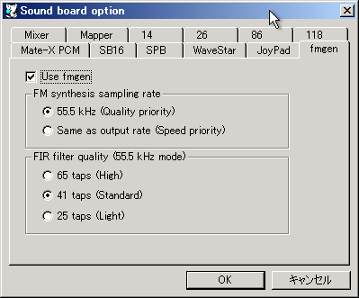

fmgenはcisc氏が作成した高品質のソフトウェアFM/PSG音源です。 fmgenの著作権はcisc氏が所有しています。
チェックするとfmgenを使用します。
FM合成時のサンプリングレートを設定します。
| 設定値 | 説明 |
|---|---|
| 55.5 kHz | 標準のサンプリングレートを使用します（推奨）。より正確に音が再現されますが、負荷は増加します。 |
| Same as sound output rate | ConfigureのSampling Rateを使用します。低負荷ですが、エイリアシングを積極的に使う音は違う音に化けてしまいます。 |
サンプリングレート変換の品質を指示します。tap数が多いほど高品質ですが、負荷が大きくなります。